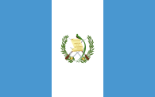
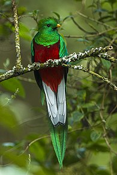

Historia

Es el emblema de la República de Guatemala y ha sufrido transformaciones desde incluso antes de la la creación de la república el 21 de marzo de 1847. Originalmente fue creada por el gobierno conservador del general Rafael Carrera y Turcios basado en la propuesta del obispo Juan José de Aycinena y Piñol y otros miembros del Clan Aycinena quienes querían enfatizar la influencia conservadora en Guatemala manteniendo elementos españoles en la bandera.

El escudo de Guatemala fue creado por el Decreto Ejecutivo No. 33 del 18 de noviembre de 1871, siendo Presidente de la República el general Miguel García Granados y está compuesto por el ave nacional de Guatemala, el quetzal, símbolo de la libertad; un pergamino con la fecha en la cual Centroamérica se independizó de España, el 15 de septiembre de 1821; dos rifles Remington cruzados, con bayonetas, que indican la voluntad de defender los intereses de Guatemala por medio de la fuerza si fuese necesario; dos espadas cruzadas, que simbolizan el honor; y una corona de laurel que simboliza la victoria y la paz preferida sobre la guerra. Con motivo de los 50 años de la independencia, en 1871, el presidente de la República, Miguel García Granados, solicita a la Casa de la Moneda un diseño para tal conmemoración. El escudo fue elaborado por Juan Bautista Frener.

El quetzal (Pharomachrus mocinno) es el ave nacional que simboliza la libertad. Es un ave delicada que rebosa en su pecho rojo ardiente y se delinea con su cola larga y plumas verdes como su hábitat. Es un ave de únicas manifestaciones en el mundo que, al perder su libertad, muere.
Extensión Territorial
Guatemala tiene una extensión territorial de 108,888 km²